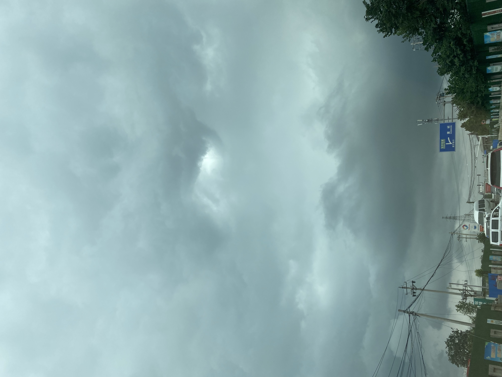

这周陆冲学习了三个技能，折叠 pumping、单膝跪板转弯、slide。
slide⬇️：
给各位跪一个⬇️：
这几个都不是一时半会能学会的，需要熟能生巧，尤其是折叠要自己找感觉，我现在做得很扭捏、肩膀无法放松，做 slide 需要一定的胆量，我在做 slide 的时候摔了两次，从滑板上下来了几次。
我通常是开车去学滑板的地方，单程差不多 25 到 30 分钟，在来回的路上我一般听博客，优先听最新一期的「谐星聊天会」，上周尝试坐了次地铁去上课，路上没有听，所以就攒了两期，这两期一期是讨论短视频给生活带来的影响，另一期是讨论和朋友在一起的时候能玩点什么。
短视频那个有一段用红楼中的贾瑞之死来做比喻，简直太棒了，我准备之后单独水一篇短文来介绍下贾瑞之死和短视频之间的关系，而且计划写一系列红楼梦带给我的启发文章。
和朋友一起玩什么那一期，开头问到最近和朋友在什么时间玩了什么，我想了想，我想现在几乎没有任何社交活动了，顶多偶尔和两三个同事约顿饭，频率也不会超过两周一次，而且通常选择中午时间，1 小时纯吃，晚上会耽误下班。至于上一次玩是什么时候，我想了想大概是 7 月中旬参加的一次团建，吃完饭后一起打了打德扑，也是那次学会了德扑。
我本身也不太喜欢很多人一起的 Social 活动，所以滑板很适合我这样的人，能多人一起练活、也能自己一个人享受滑行时的沉浸感。
周六我在上完课回来的路上天气突然阴了下来，不知道为什么我特别喜欢这样阴阴的天气，于是拍了几张照片记录下：

这么快一个月就过去了，截止目前一共上了 8 次课，还剩最后 4 次，预计再有 2-3 周就上完了。按照平均每次上课和课后练习一共 3 小时，再加上平时的一些练习来算的话，我在陆冲上投入差不多有 30 个小时，已经可以使用陆冲来刷街了。
刷街⬇️：
今天周一，我开始尝试滑着滑板到地铁，然后下地铁后滑到公司，很顺利。为了减负，我把背包也换了个更轻便的，里边只有一个 iPad 和一把雨伞。